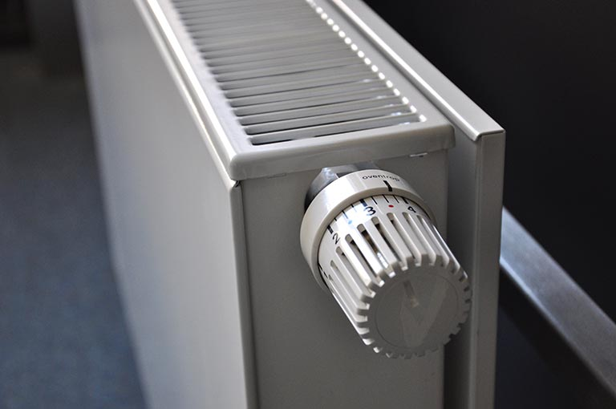

Expert Furnace Service & Boiler Repair | Schedule Instantly Online For Your Home Oil Heating System
For more information about furnaces and boilers, click here!
Furnace service is required if any of the following apply:
1. It doesn’t heat properly.
Not being able to effectively heat is the number one sign you need furnace service. There are a variety of factors that could cause your home temperature to be cold as a result of your furnace not creating hot air – some common ones are a clogged burner, a faulty motor, or a clogged filter.
2. Thermostat doesn’t work.
If you continue to feel cold despite turning up your thermostat, it might be time for a professional to take a look at your system. The thermostat’s temperature sensitive switches – which control your house’s temperature – could need calibrating.
In this case, switch your furnace off and call a professional technician to review your furnace and thermostat.
3. Getting alerts from your carbon monoxide alarm.
If you have been hearing alerts from your carbon monoxide alarm, this is an emergency – call 911 and immediately turn off your furnace. Carbon monoxide gas can be emitted from a furnace if it has a cracked heat exchanger. This gas is dangerous because although it has no color or odor, inhalation can be deadly.
Even if you are not hearing noises from your carbon monoxide alarm, if you suspect any damage to your furnace’s heat exchanger, turn it off and call a technician for furnace service.
4. Banging noises
If your furnace is being noisy, especially with banging or clanging noises, this can be a sign that it needs repair as it could be damaged.
One common suspect for a noisy furnace is a problem with the ignitor, meaning that gas builds up for a while before it is ignited. The build up causes a thumping noise and, over time, this delay will cause additional damage to your system.
5. Utility bills are getting more expensive
If your utility costs jump from month to month, it is usually a sign that there is an issue with your furnace. In fact, this is one of the most telltale signs that you need urgent furnace repair.
If your furnace is behaving sub-optimally while the thermostat is set to the same target temperature, it will burn more gas, oil, or electricity than it normally does to maintain the load demand. This ends up being reflected in your end of the month energy bill.
7. Furnace cycles frequently
A furnace turning on and off frequently usually indicates an underlying problem with the heating system. Usually, the problem lies with a faulty thermostat, bad air circulation, or a clogged filter.
Another large cause of cycling is that your furnace is too large for your home. An excessively large furnace has to continually stop and start to meet demand rather than running for longer periods of time. This highlights the need for professional installation from a respected company.
Your boiler needs repair if:

1. Boiler doesn’t heat properly.
Just like with a furnace, your boiler needs professional care if you find it isn’t heating.
2. Boiler starts to smell funny.
Strange smells from your boiler are never a good sign, and sometimes indicate imminent danger. It is best to contact a professional as quickly as possible.
3. Boiler is leaking.
If your boiler is leaking, it is time to call a professional. Boiler leaks don’t only mean your boiler is performing inefficiently – leaks can have dangerous consequences.
Many homes and buildings have been uninhabitable for days due to complications with boiler leaks. They can end up destroying property, compromising structural integrity, and cause mold to start growing in your home.
It is important to take leaks seriously as leaving them could cause additional headaches down the road.
4. Your boiler is not energy efficient.
Similarly to furnaces, if you see energy expenditure month to month increasing sharply, your boiler might be in need of repair.
The need for an efficient boiler is especially pressing now, as energy prices across all sectors are expected to rise in the coming months.
Before you replace a boiler, consider calling a professional to see if it can be tuned through relatively cheap repairs. With that said, if it becomes clear that your boiler is headed for disrepair, do not waste too many resources trying to fix it up.
5. Boiler takes a while to heat.
If you’re noticing that your boiler takes longer than usual to heat up your home, it is easy to write it off as the effect of colder temperatures.
However, correctly calibrated heating systems in a home should be able to account for cooler temperatures and slow heating could actually be reflecting an issue with your boiler.
Call a professional for service to head off the possibility of a future breakdown.
6. Boiler’s pilot light is out.
Unlike the pilot light on a stove, it is unwise to try and relight an extinguished pilot light on a boiler yourself. Rather, call a service professional to prioritize your safety.
Other warning signs related to your pilot light are the presence of oil stains or a yellow flame. Both of these indicate deeper issues that require repair.
8. Uneven heating.
If one half of a room seems noticeably colder than the other half, or vice versa, it is likely your boiler could be experiencing an issue. Call a technician to make sure everything is running smoothly with your heating system.
9. Boiler is making noises.
A hiss-like sound from your boiler usually means a deposit is forming in it. This usually isn’t a major issue – a professional service will be able to easily clean your boiler and provide general maintenance.
However, if you leave your boiler untreated this could allow the deposits to accumulate and end up causing costly repairs or boiler failure in the long term.